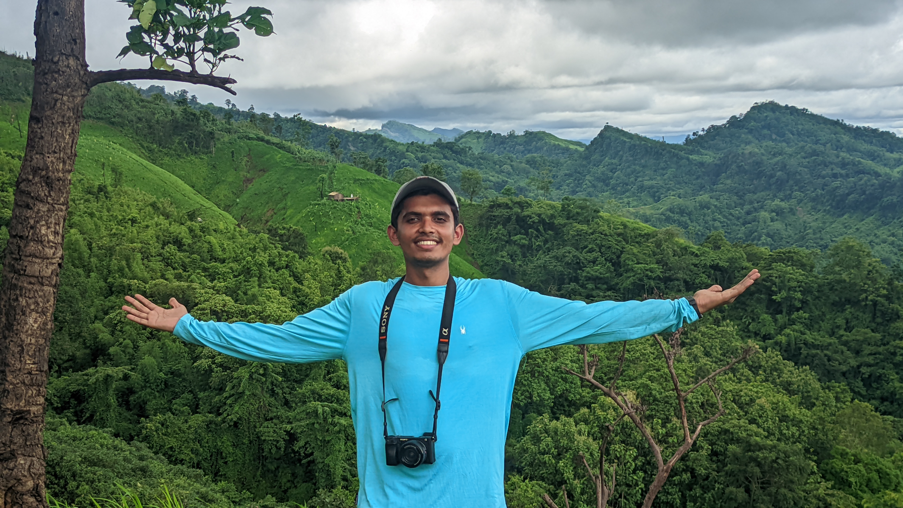
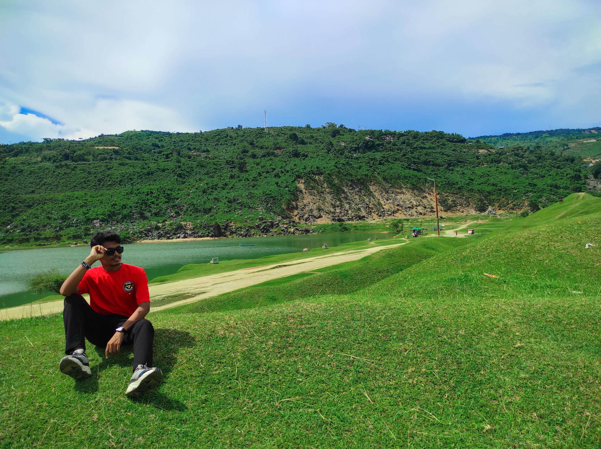
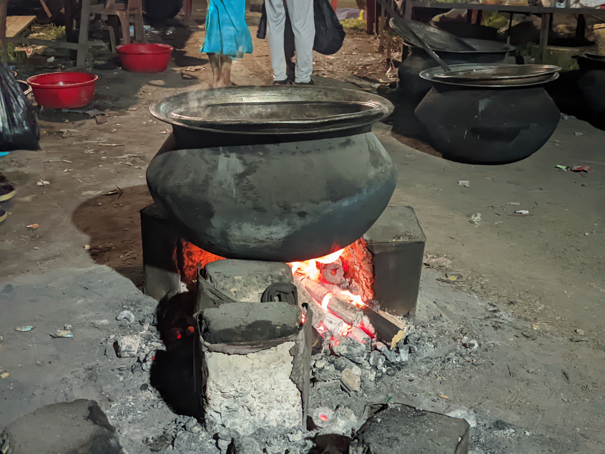

Rangamati

Rangamati's Kaptai Lake and hill views always feel magical.
Exploring the Mountains & Beauty of Bangladesh
I travel across Bangladesh capturing mountains, rivers and hidden beauty.

Bandarban is one of my favorite mountain destinations. Nilgiri, Nafakhum, Boga Lake – every place tells a story of adventure.

Sylhet is full of green tea gardens, waterfalls, and peaceful nature landscapes.

From hills to sea beach, Chittagong gives the perfect mix of mountains and ocean vibes.
Rangamati's Kaptai Lake and hill views always feel magical.